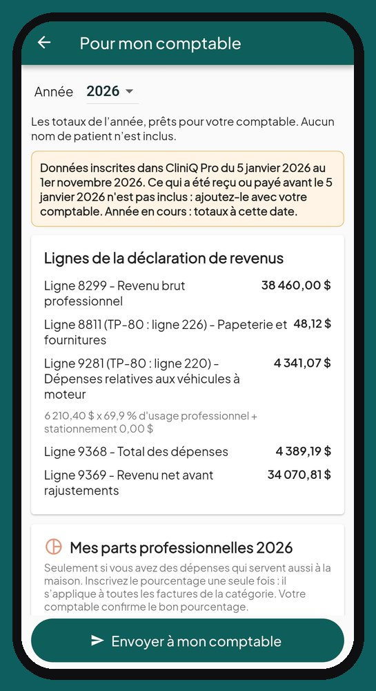
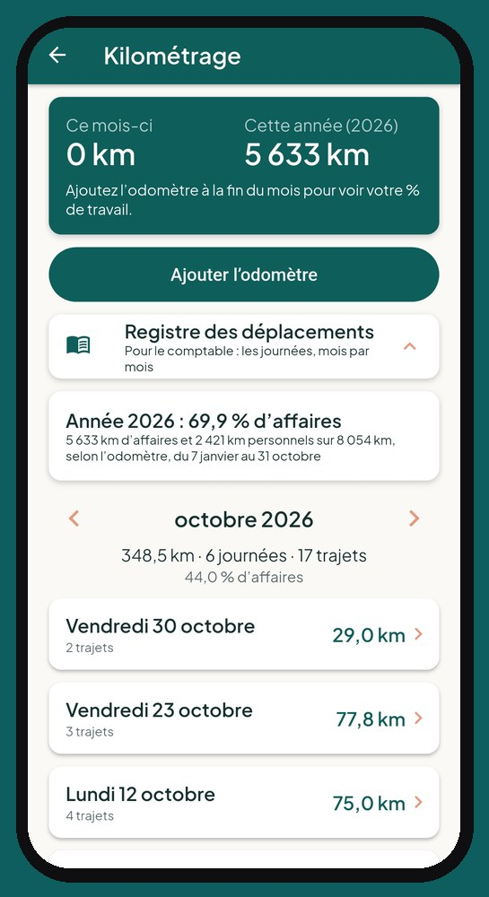

Dépenses classées et sommaire annuel pour votre comptable
Vos dépenses classées, votre comptable servi.
Essence, matériel, cellulaire : chaque dépense se classe avec sa pièce justificative au moment où vous la faites.
Une photo du reçu, et c'est classé
À partir d'une photo, la date, le total et le commerçant sont remplis pour vous. Vous vérifiez avant d'enregistrer, et la photo reste jointe à la dépense.

Les dépenses partagées avec la maison
Pour une facture qui sert aussi à la maison, comme le cellulaire, vous inscrivez votre part professionnelle, en pourcentage, une fois par année pour la catégorie. Pour une facture particulière, vous pouvez plutôt inscrire le montant professionnel, avec une note.
« Envoyer à mon comptable »
Un seul bouton prépare votre sommaire annuel en PDF : revenus, dépenses classées selon les lignes de la déclaration de revenus, part professionnelle des dépenses partagées, kilométrage et part d'usage du véhicule. Vos reçus suivent, avec leurs photos. Aucun nom de patient n'y figure.
Rapport de taxes : chaque mois, trimestre ou année
Si votre entreprise est inscrite aux taxes, CliniQ Pro prépare votre rapport de taxes selon votre fréquence de déclaration : chaque mois, chaque trimestre ou une fois par année. Il montre les taxes perçues sur vos ventes taxables, les crédits de taxe sur vos dépenses et le montant à remettre, présentés comme dans votre déclaration de TPS/TVH (et de TVQ au Québec). Les services de santé exonérés sont comptés à part. Un bouton produit le rapport en PDF.
Pas encore inscrit aux taxes ? L'application suit vos ventes taxables des quatre derniers trimestres et vous avertit à l'approche du seuil de 30 000 $.
Selon votre province
Le sommaire pour le comptable et vos reçus s'adaptent à la province inscrite dans votre profil :
- Québec : lignes du formulaire fédéral T2125, avec la ligne correspondante du TP-80, et TPS + TVQ.
- Ontario, Nouveau-Brunswick, Nouvelle-Écosse, Île-du-Prince-Édouard, Terre-Neuve-et-Labrador : T2125 et TVH.
- Colombie-Britannique, Saskatchewan, Manitoba : T2125, TPS et TVP, chacune dans sa case.
- Alberta et territoires : T2125 et TPS.
Votre comptable confirme toujours le classement.

Questions fréquentes
L'application lit-elle mes reçus de dépenses ?
Oui, à partir d'une photo : la date, le total et le commerçant sont remplis pour vous. Vous vérifiez avant d'enregistrer.
Y a-t-il un rapport de taxes trimestriel ?
Oui. Si votre entreprise est inscrite aux taxes, choisissez votre fréquence (mois, trimestre ou année) : le rapport de TPS/TVH, et de TVQ au Québec, se prépare tout seul avec le montant à remettre, en PDF.
Qu'est-ce que mon comptable reçoit ?
Un PDF d'une page avec les totaux de l'année : revenus, dépenses par catégorie et véhicule, selon les lignes de la déclaration de revenus. Aucun nom de patient n'y figure. Votre comptable confirme toujours le classement.
Lancement le 1er janvier 2027
Voyez l'application écran par écran, puis réservez votre place : nous vous écrirons dès l'ouverture.
Voir l'applicationRéservez votre place
Une question ? soutien@cliniqpromobile.ca
Les fonctions
- Agenda et itinéraire
- Dossier patient et notes
- Reçus et factures
- Kilométrage automatique
- Registre de stérilisation
- Services à domicile, tout-en-un
- Questions et réponses
- Tarifs